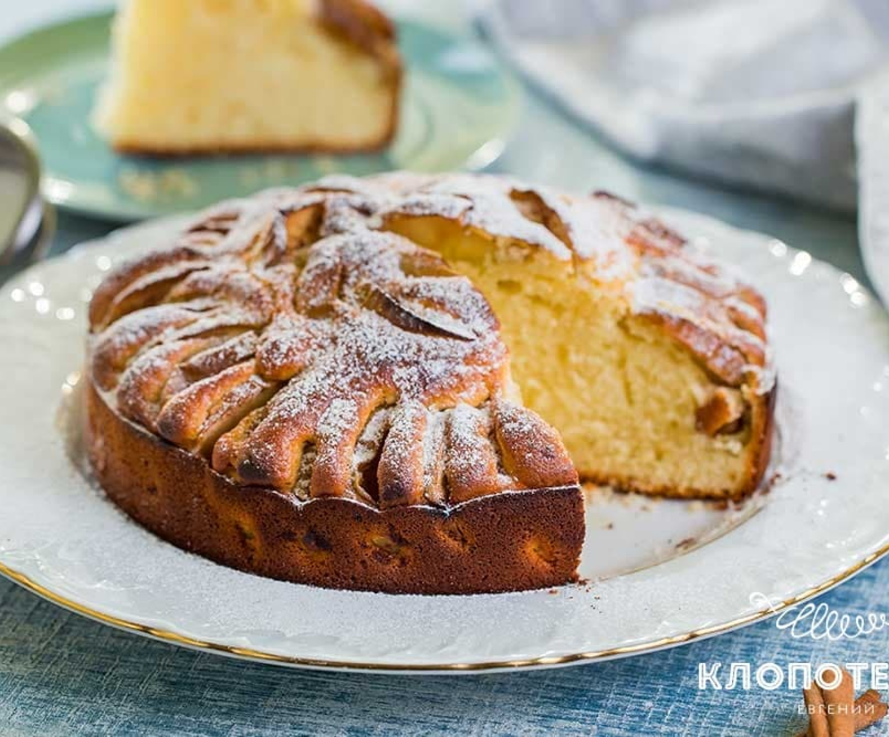

НАЙПРОСТІШИЙ РЕЦЕПТ ЯБЛУЧНОГО АРОМАТНОГО ПИРОГА НА КЕФІР

- 2 яйця
- 200 г цукру
- 1 ч. л. ванільного цукру
- 250 мл кефіру
- 50 г вершкового масла
- 1 дрібка солі
- 1 ч. л. розпушувача
- 2-3 яблука твердих сортів
- 1 ч. л. меленої кориці
- 1 ст. л. цукрової пудри
Духовку треба розігріти до 180 градусів. Змішайте в мисці 2 яйця й 200 г цукру. Використовуйте ємність достатнього розміру, щоб у ній помістилося все тісто. Якщо у вас є кухонна машина, можете замісити тісто в ній.
Додайте дрібку солі та 1 ч. л. ванільного цукру. Ретельно збийте суміш віничком.
Додайте 50 г м'якого вершкового масла та перемішайте масу до отримання однорідної консистенції.
Влийте в миску 250 мл кефіру. Знову перемішайте віничком до повного об'єднання. Я використовую звичайний магазинний кефір.
Додайте до маси 1 ч. л. розпушувача та перемішайте віничком. Часто можна побачити пораду, що розпушувач обов'язково потрібно змішати з борошном, але повірте мені, тут це не має ніякого значення.
Просійте 250 г борошна через сито та додайте його в миску, постійно перемішуючи суміш віничком.
Добре перемішайте масу до однорідного стану. Готове тісто повинно вийти досить густим, як дуже густа сметана.
Влийте все тісто в форму для випікання, щоб воно рівномірно розподілилося по ній.
У разі потреби акуратно розрівняйте тісто в формі за допомогою столової ложки
На тісто викладіть часточки яблук віялом так, щоб вони зайняли всю площу пирога.